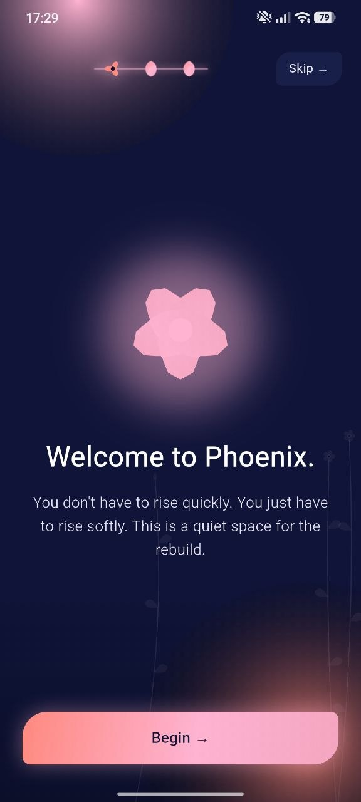
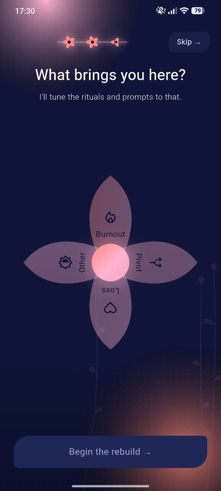
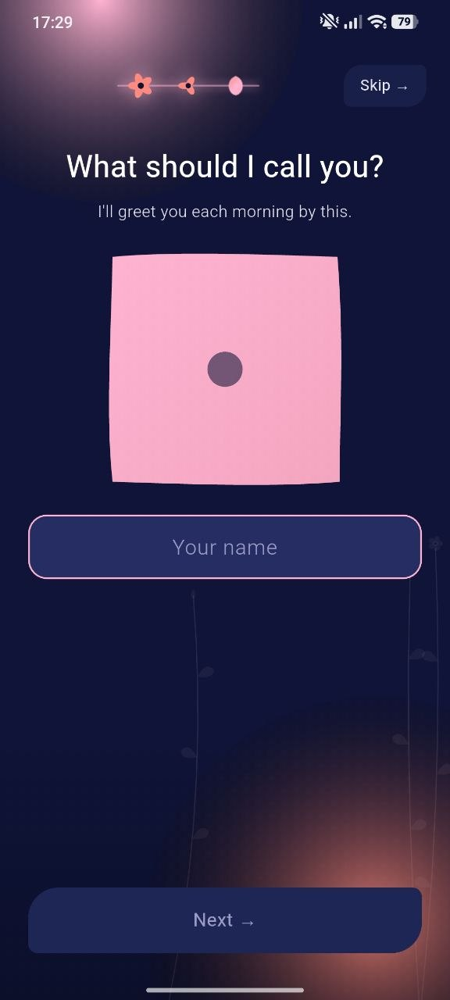
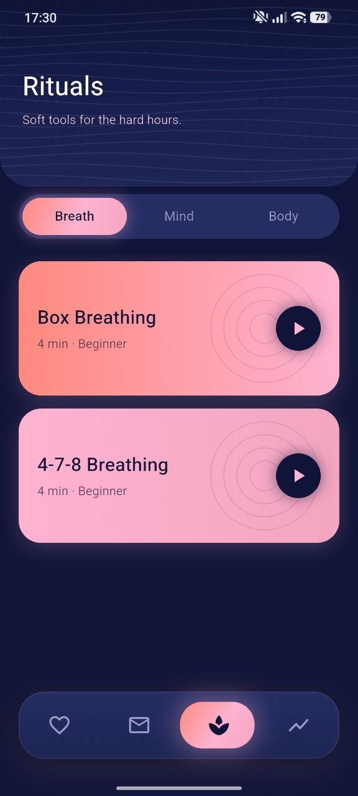
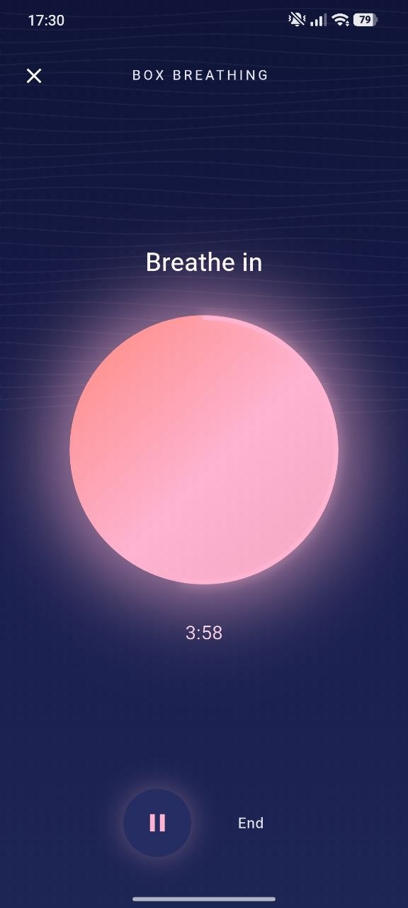

Evening check-in
Write down what stayed with you today and close the day with a softer mind.
NV Mood Rituals gives you a calm space to check in, save your feelings, and build small emotional rituals that fit naturally into your day.

Write down what stayed with you today and close the day with a softer mind.
Save quick thoughts, feelings, triggers, and little wins without turning it into work.
Create simple rituals around rest, focus, gratitude, breathing, or emotional reset.
Notice how your days feel over time and understand what helps you feel grounded.
Open the app, choose what feels closest, add a note if you want, and let your mood history become something calm instead of chaotic.




Put your real screenshots in the same folder as these files and name them: photo1.jpeg, photo2.jpeg, photo3.jpeg and so on.
Dark blue depth, soft pink accents, smooth motion, and focused screens make the app feel more like a personal ritual than a tracker.
“It feels gentle. I can check in without feeling like I have to explain my whole life.”
Mood journal user“The colors make it feel peaceful, and the daily ritual idea actually makes me come back.”
Daily routine user“Simple, calm, and private. Exactly what I wanted from a mood app.”
Wellness app userDownload the app and create a softer daily rhythm for your mood, notes, and personal rituals.
Download Now